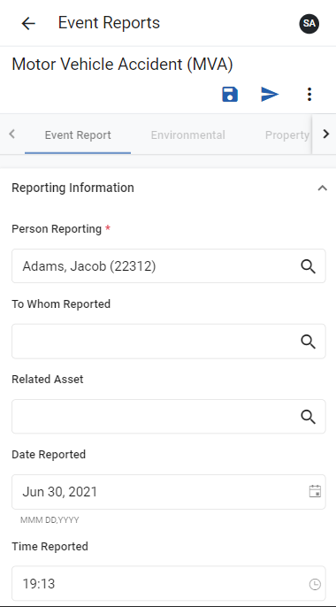

If an event report includes instructions, they will display at the top of the report template.
Select EventReports from the side menu.
Click the CreateNew button.
Select the type of event you are reporting. If there is only one event report type available to your role, you will not be prompted to select an event report type.
Complete the fields to the best of your ability, ensuring you provide a value for all required fields.

When you are finished, click Submit. To save the event report and complete it later, click Save. The event report will display in the In Progress list.
Incidents cannot be modified after they are submitted.